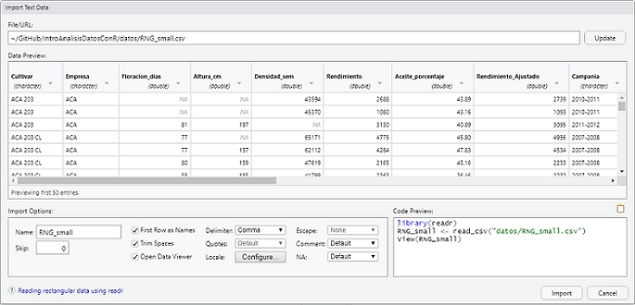
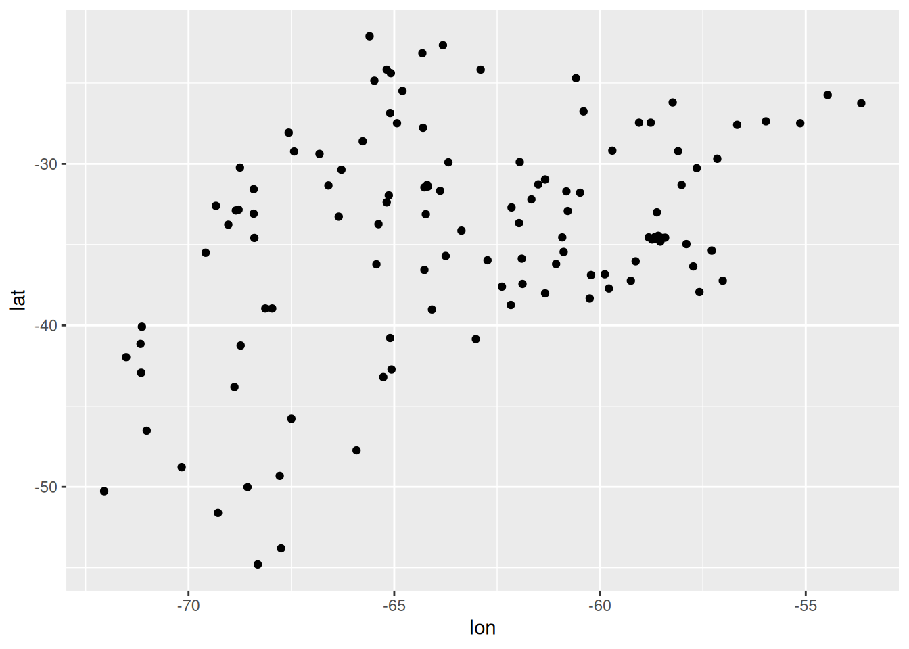
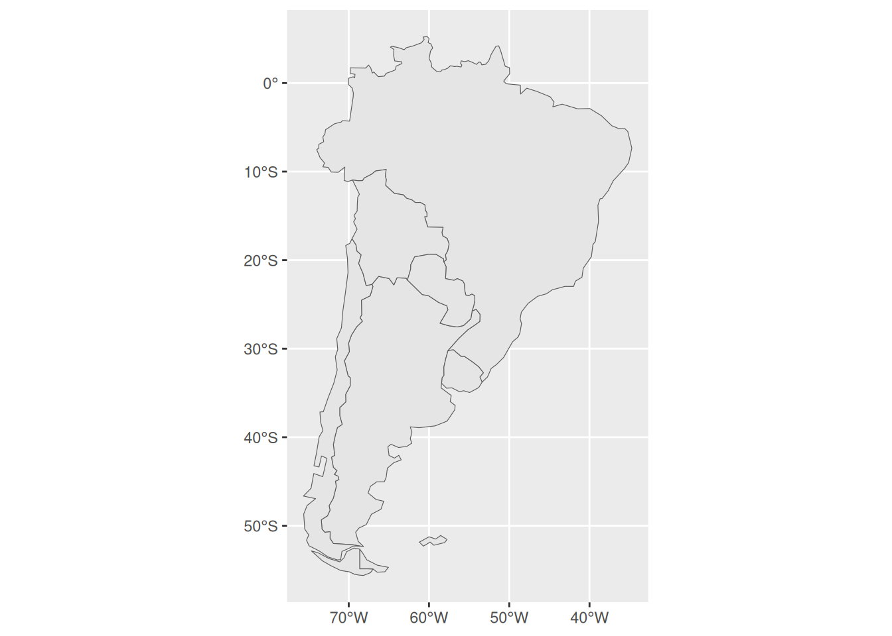
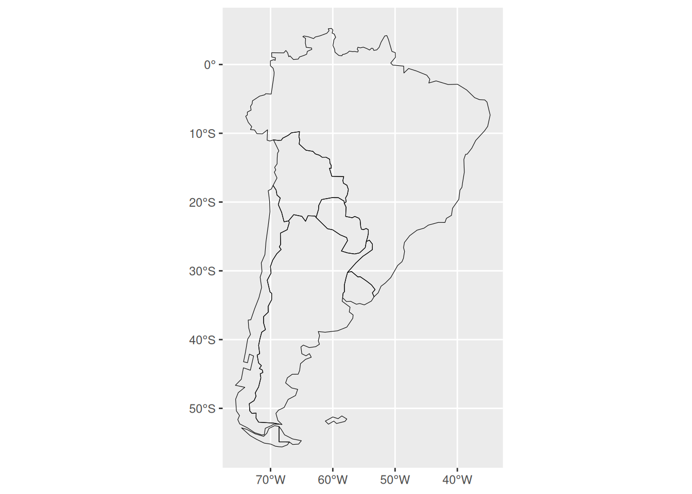
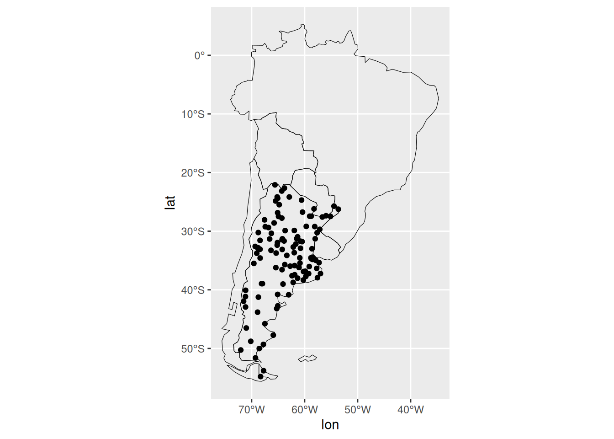
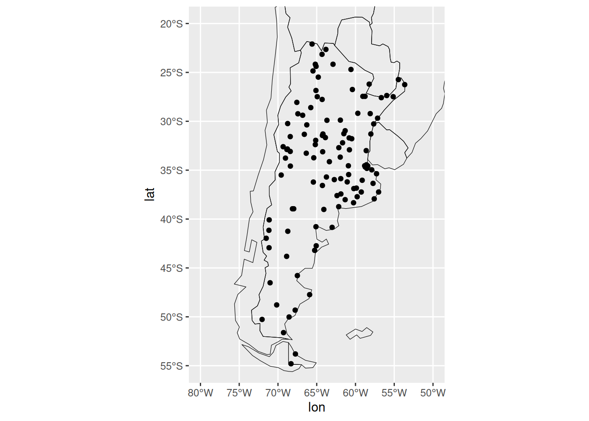
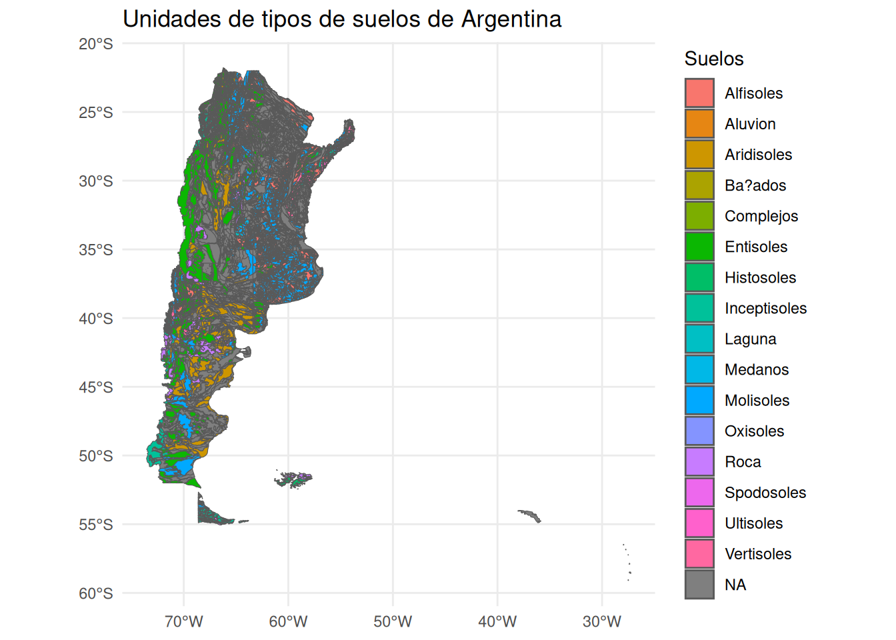

Ecosistema(s) espacial(es) de R
Datos vectoriales
Los datos vectoriales se pueden acceder como cualquier otro dato en R:
podemos leerlos desde un archivo en nuestra computadora.
podemos cargarlos con un paquete y utilizarlos.
Vamos a trabajar con ambos métodos.
Leyendo datos de un archivo
Existen muchas funciones distintas para leer datos dependiendo del formato en el que están guardados. Para datos tabulares, la forma más útil es el formato csv, que es un archivo de texto plano con datos separados por coma.
Para importar datos hace falta escribir el código correspondiente pero también podés aprovechar el entorno gráfico de RStudio:
File → Import Dataset → From Text (readr)…
Esto te va abrir una ventana donde podrás elegir el archivo a importar (en este caso el archivo estaciones_smn.csv que está dentro de la capeta datos del proyecto) y otros detalles.
En la pantalla principal vas a poder previsualizar los datos. Abajo a la izquierda tenés varias opciones: el nombre que vas a usar para la variable (en este caso llamaremos estaciones_smn), si la primera fila contiene los nombres de las columnas (First Row as Names), qué delimitador tienen los datos (en este caso comma, pero podría ser punto y coma u otro), etc…
Y abajo a la derecha es el código que vas a necesitar para efectivamente importar los datos. Podrías apretar el botón “Import” para leer los datos pero si bien es posible, al mismo tiempo esas líneas de código no se guardan en ningún lado y entonces nuestro trabajo luego no se puede reproducir. Por eso, te proponemos que copies ese código, cierres esa ventana con el botón “Cancel”, y pegues el código en el archivo donde estés trabajando. Cuando lo ejecutes, se va a generar la variable estaciones_smn con los datos.
library(readr)
estaciones_smn <- read_csv("datos/estaciones_smn.csv") Rows: 117 Columns: 5
── Column specification ────────────────────────────────────────────────────────
Delimiter: ","
chr (2): nombre, provincia
dbl (3): lon, lat, altua
ℹ Use `spec()` to retrieve the full column specification for this data.
ℹ Specify the column types or set `show_col_types = FALSE` to quiet this message.Nota: Notá que en este caso el código para leer los datos consta de dos líneas. La primera carga el paquete readr y el segundo usa la función read_csv() (del paquete readr) para leer el archivo .csv. No es necesario cargar el paquete cada vez que vas a leer un archivo, pero asegurate de incluir esta línea en el primer bloque de código de tu archivo.
Nota: La interfaz de usuario de RStudio sirve para autogenerar el código que lee el archivo. Una vez que lo tenés, no necesitás abrirla de nuevo.
Todo ese texto naranja/rojo es intimidante pero no te preocupes, es sólo un mensaje que nos informa que los datos se leyeron y qué tipo de dato tiene cada columna. Podemos explorar la estructura de la variable estaciones_smn usando la función str() (de structure en inglés).
str(estaciones_smn)spc_tbl_ [117 × 5] (S3: spec_tbl_df/tbl_df/tbl/data.frame)
$ nombre : chr [1:117] "AZUL AERO" "BAHIA BLANCA AERO" "BENITO JUAREZ AERO" "BOLIVAR AERO" ...
$ provincia: chr [1:117] "BUENOS AIRES" "BUENOS AIRES" "BUENOS AIRES" "BUENOS AIRES" ...
$ lon : num [1:117] -59.9 -62.2 -59.8 -61.1 -58.7 ...
$ lat : num [1:117] -36.8 -38.7 -37.7 -36.2 -34.5 ...
$ altua : num [1:117] 147 83 207 94 26 247 233 9 12 20 ...
- attr(*, "spec")=
.. cols(
.. nombre = col_character(),
.. provincia = col_character(),
.. lon = col_double(),
.. lat = col_double(),
.. altua = col_double()
.. )
- attr(*, "problems")=<externalptr> Esto nos dice un montón. La primera línea dice que es una tibble, que es un caso especial de la estructura de datos tabular básica de R llamada data.frame. Tiene 117 filas (las observaciones) y 5 columnas (o variables que describen las observaciones). Las siguientes líneas nos dicen los nombres de las columnas (nombre, provincia, lon, lat, y altua), su tipo de dato (chr o num), la longitud ([1:117]) y sus primeros elementos.
Podemos ver que esta tabla tiene dos variables que indican la latitud y longitud de cada fila. En este caso estamos ante un tipo de dato vectorial de puntos.
Para poder graficarlos vamos a utilizar el paquete {ggplot2} que permite generar gráficos de gran calidad en pocos pasos. Pero antes de graficar, veamos otra manera de leer datos vectoriales.
Usando un paquete: Natural Earth, datos del mundo.
{rnaturalearth} es un paquete de R para mantener y facilitar la interacción con los datos de los mapas vectoriales de la tierra natural un conjunto de datos cartográficos de dominio público que incluye vectores de países y otras fronteras administrativas.
Es muy útil para confeccionar mapas base, por ejemplo, para graficar el mapa de Argentina y sus países limítrofes cargamos los datos con ne_countries():
library(rnaturalearth)
mapa <- ne_countries(country = c("argentina", "chile", "uruguay",
"paraguay", "brazil", "bolivia",
"falkland islands"),
returnclass = "sf")El argumento country es un vector con los países que necesitamos. El argumento returnclass hace referencia a la estructura que queremos que devuelva. En este caso, returnclass = "sf" hace que devuelva un objeto de clase “Simple Features”. Este tipo de dato también se pueden graficar con {ggplot2}.
Veamos el contenido de mapa
str(mapa)Classes 'sf' and 'data.frame': 7 obs. of 169 variables:
$ featurecla: chr "Admin-0 country" "Admin-0 country" "Admin-0 country" "Admin-0 country" ...
$ scalerank : int 1 1 1 1 1 1 1
$ labelrank : int 2 2 5 4 2 3 4
$ sovereignt: chr "Argentina" "Chile" "United Kingdom" "Uruguay" ...
$ sov_a3 : chr "ARG" "CHL" "GB1" "URY" ...
$ adm0_dif : int 0 0 1 0 0 0 0
$ level : int 2 2 2 2 2 2 2
$ type : chr "Sovereign country" "Sovereign country" "Disputed" "Sovereign country" ...
$ tlc : chr "1" "1" "1" "1" ...
$ admin : chr "Argentina" "Chile" "Falkland Islands" "Uruguay" ...
$ adm0_a3 : chr "ARG" "CHL" "FLK" "URY" ...
$ geou_dif : int 0 0 0 0 0 0 0
$ geounit : chr "Argentina" "Chile" "Falkland Islands" "Uruguay" ...
$ gu_a3 : chr "ARG" "CHL" "FLK" "URY" ...
$ su_dif : int 0 0 0 0 0 0 0
$ subunit : chr "Argentina" "Chile" "Falkland Islands" "Uruguay" ...
$ su_a3 : chr "ARG" "CHL" "FLK" "URY" ...
$ brk_diff : int 0 0 1 0 0 0 0
$ name : chr "Argentina" "Chile" "Falkland Is." "Uruguay" ...
$ name_long : chr "Argentina" "Chile" "Falkland Islands / Malvinas" "Uruguay" ...
$ brk_a3 : chr "ARG" "CHL" "B12" "URY" ...
$ brk_name : chr "Argentina" "Chile" "Falkland Is." "Uruguay" ...
$ brk_group : chr NA NA NA NA ...
$ abbrev : chr "Arg." "Chile" "Flk. Is." "Ury." ...
$ postal : chr "AR" "CL" "FK" "UY" ...
$ formal_en : chr "Argentine Republic" "Republic of Chile" "Falkland Islands" "Oriental Republic of Uruguay" ...
$ formal_fr : chr NA NA NA NA ...
$ name_ciawf: chr "Argentina" "Chile" "Falkland Islands (Islas Malvinas)" "Uruguay" ...
$ note_adm0 : chr NA NA "U.K." NA ...
$ note_brk : chr NA NA "Admin. by U.K.; Claimed by Argentina" NA ...
$ name_sort : chr "Argentina" "Chile" "Falkland Islands" "Uruguay" ...
$ name_alt : chr NA NA "Islas Malvinas" NA ...
$ mapcolor7 : int 3 5 6 1 5 1 6
$ mapcolor8 : int 1 1 6 2 6 5 3
$ mapcolor9 : int 3 5 6 2 5 2 6
$ mapcolor13: int 13 9 3 10 7 3 2
$ pop_est : num 4.49e+07 1.90e+07 3.40e+03 3.46e+06 2.11e+08 ...
$ pop_rank : int 15 14 4 12 17 14 13
$ pop_year : int 2019 2019 2016 2019 2019 2019 2019
$ gdp_md : int 445445 282318 282 56045 1839758 40895 38145
$ gdp_year : int 2019 2019 2012 2019 2019 2019 2019
$ economy : chr "5. Emerging region: G20" "5. Emerging region: G20" "2. Developed region: nonG7" "5. Emerging region: G20" ...
$ income_grp: chr "3. Upper middle income" "3. Upper middle income" "1. High income: OECD" "3. Upper middle income" ...
$ fips_10 : chr "AR" "CI" "FK" "UY" ...
$ iso_a2 : chr "AR" "CL" "FK" "UY" ...
$ iso_a2_eh : chr "AR" "CL" "FK" "UY" ...
$ iso_a3 : chr "ARG" "CHL" "FLK" "URY" ...
$ iso_a3_eh : chr "ARG" "CHL" "FLK" "URY" ...
$ iso_n3 : chr "032" "152" "238" "858" ...
$ iso_n3_eh : chr "032" "152" "238" "858" ...
$ un_a3 : chr "032" "152" "238" "858" ...
$ wb_a2 : chr "AR" "CL" "-99" "UY" ...
$ wb_a3 : chr "ARG" "CHL" "-99" "URY" ...
$ woe_id : int 23424747 23424782 23424814 23424979 23424768 23424762 23424917
$ woe_id_eh : int 23424747 23424782 23424814 23424979 23424768 23424762 23424917
$ woe_note : chr "Exact WOE match as country" "Exact WOE match as country" "Exact WOE match as country" "Exact WOE match as country" ...
$ adm0_iso : chr "ARG" "CHL" "B12" "URY" ...
$ adm0_diff : chr NA NA NA NA ...
$ adm0_tlc : chr "ARG" "CHL" "B12" "URY" ...
$ adm0_a3_us: chr "ARG" "CHL" "FLK" "URY" ...
$ adm0_a3_fr: chr "ARG" "CHL" "FLK" "URY" ...
$ adm0_a3_ru: chr "ARG" "CHL" "FLK" "URY" ...
$ adm0_a3_es: chr "ARG" "CHL" "FLK" "URY" ...
$ adm0_a3_cn: chr "ARG" "CHL" "FLK" "URY" ...
$ adm0_a3_tw: chr "ARG" "CHL" "FLK" "URY" ...
$ adm0_a3_in: chr "ARG" "CHL" "FLK" "URY" ...
$ adm0_a3_np: chr "ARG" "CHL" "FLK" "URY" ...
$ adm0_a3_pk: chr "ARG" "CHL" "FLK" "URY" ...
$ adm0_a3_de: chr "ARG" "CHL" "FLK" "URY" ...
$ adm0_a3_gb: chr "ARG" "CHL" "FLK" "URY" ...
$ adm0_a3_br: chr "ARG" "CHL" "FLK" "URY" ...
$ adm0_a3_il: chr "ARG" "CHL" "FLK" "URY" ...
$ adm0_a3_ps: chr "ARG" "CHL" "FLK" "URY" ...
$ adm0_a3_sa: chr "ARG" "CHL" "FLK" "URY" ...
$ adm0_a3_eg: chr "ARG" "CHL" "FLK" "URY" ...
$ adm0_a3_ma: chr "ARG" "CHL" "FLK" "URY" ...
$ adm0_a3_pt: chr "ARG" "CHL" "FLK" "URY" ...
$ adm0_a3_ar: chr "ARG" "CHL" "ARG" "URY" ...
$ adm0_a3_jp: chr "ARG" "CHL" "FLK" "URY" ...
$ adm0_a3_ko: chr "ARG" "CHL" "FLK" "URY" ...
$ adm0_a3_vn: chr "ARG" "CHL" "FLK" "URY" ...
$ adm0_a3_tr: chr "ARG" "CHL" "FLK" "URY" ...
$ adm0_a3_id: chr "ARG" "CHL" "FLK" "URY" ...
$ adm0_a3_pl: chr "ARG" "CHL" "FLK" "URY" ...
$ adm0_a3_gr: chr "ARG" "CHL" "FLK" "URY" ...
$ adm0_a3_it: chr "ARG" "CHL" "FLK" "URY" ...
$ adm0_a3_nl: chr "ARG" "CHL" "FLK" "URY" ...
$ adm0_a3_se: chr "ARG" "CHL" "FLK" "URY" ...
$ adm0_a3_bd: chr "ARG" "CHL" "FLK" "URY" ...
$ adm0_a3_ua: chr "ARG" "CHL" "FLK" "URY" ...
$ adm0_a3_un: int -99 -99 -99 -99 -99 -99 -99
$ adm0_a3_wb: int -99 -99 -99 -99 -99 -99 -99
$ continent : chr "South America" "South America" "South America" "South America" ...
$ region_un : chr "Americas" "Americas" "Americas" "Americas" ...
$ subregion : chr "South America" "South America" "South America" "South America" ...
$ region_wb : chr "Latin America & Caribbean" "Latin America & Caribbean" "Latin America & Caribbean" "Latin America & Caribbean" ...
$ name_len : int 9 5 12 7 6 7 8
$ long_len : int 9 5 27 7 6 7 8
$ abbrev_len: int 4 5 8 4 6 7 5
[list output truncated]
- attr(*, "sf_column")= chr "geometry"
- attr(*, "agr")= Factor w/ 3 levels "constant","aggregate",..: NA NA NA NA NA NA NA NA NA NA ...
..- attr(*, "names")= chr [1:168] "featurecla" "scalerank" NA NA ...Vemos que tiene muchas más variables, hacia el final de los datos podemos ver que se indica que hay una clase “MULTIPOLYGON”
Graficando
Ahora si veamos como podemos generar un mapa con los puntos y los polígonos que obtuvimos en los pasos anteriors.
Cualquier gráfico de ggplot tendrá como mínimo 3 componentes: los datos, un sistema de coordenadas y una geometría (la representación visual de los datos) y se irá construyendo por capas.
Primera capa: el área del gráfico
La función principal de {ggplot2} es justamente ggplot() que permite iniciar el gráfico y además definir las características globales. El primer argumento de esta función serán los datos que vas a visualizar, siempre en un data frame. En este caso usamos estaciones_smn.
El segundo argumento se llama “mapping” (mapeo en inglés). Este argumento define la relación entre cada columna del data frame y los distintos parámetros gráficos. Por ejemplo, qué columna va a representar el eje x, cuál va a ser el eje y, etc. Este mapeo se hace siempre con la función aes() (que viene de aesthetics, estética en inglés).
Por ejemplo, si queremos hacer un gráfico que muestre la ubicación de las estaciones usarías algo como esto:
library(ggplot2)
ggplot(data = estaciones_smn, mapping = aes(x = lon, y = lat)) +
geom_point() 
Este código le indica a ggplot que genere un gráfico donde el eje x se mapea a la columna lon y el eje y, a la columna lat. Para representar los datos usando puntos, hay que usar geom_point()
¡Nuestro primer mapa! … casi ….
Ahora veamos como se grafican los polígonos teniendo en cuenta lo que aprendimos recien. Los datos de los polígonos están en mapa y sabemos que es del tipo sf, asi que buscamos una geometría que nos permita graficar ese tipo de datos, de esta manera:
ggplot(mapa) +
geom_sf()
Por defecto, el mapa se dibuja con un fondo gris, pero el problema es que ese fondo puede tapar los datos de puntos de las estaciones. Para para dibujar sólo los contornos hay que modificar la geometría un poco:
ggplot(mapa) +
geom_sf(fill = NA, color = "black", size = 0.2)
Ahora vamos a juntar los dos mapas: el de puntos y el de polígonos
ggplot(mapa) +
geom_sf(fill = NA, color = "black", size = 0.2) +
geom_point(data = estaciones_smn, mapping = aes(lon, lat)) 
Finalmente, podemos restringir el área del mapa para que se muestre solo donde hay datos:
ggplot(mapa) +
geom_sf(fill = NA, color = "black", size = 0.2) +
geom_point(data = estaciones_smn, mapping = aes(lon, lat)) +
coord_sf(ylim = c(-55, -20), xlim = c(-80, -50))
Desafío
Intentá replicar este mismo mapa pero con los datos que están en el archivo estaciones_siga.csv dentro de la carpeta datos del proyecto.
Leyendo un archivo shape
El formato ESRI Shapefile es uno de los formatos mas comunes de informacion geografica vectorial. La mayoria de las Infraestructuras de Datos Espaciales (IDEs) nos permiten acceder a diversas capas de informacion en este formato. Una de esas IDE es la del Instituto Geografico Nacional y otra es la del Instituto Nacional de Tecnologia Agropecuaria.
De este ultimo descargue el atlas de suelos de Argentina en escala 1:500.000 que vamos a leer usando la funcion vect del paquete terra y la funcion st_as_sf el paquete sf para transformar del formato de terra a sf que necesita ggplot para poder graficar:
library(terra)terra 1.8.54library(sf)Linking to GEOS 3.12.2, GDAL 3.9.3, PROJ 9.4.1; sf_use_s2() is TRUEsuelos <- vect("datos/suelos_argentina_1_500")
suelos_sf <- st_as_sf(suelos)Ahora podemos graficar diferentes mapas de Argentina a partir de las caracteristicas de los suelos. Vamos a asocial la variable orden_sue3 para que cada categoria tenga un color diferente.
ggplot(suelos_sf) +
geom_sf(aes(fill = orden_sue3)) +
theme_minimal() +
labs(title = "Unidades de tipos de suelos de Argentina",
fill = "Suelos") 